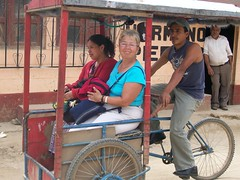

Español
Muchas gracias por su visita, y por acompañarnos en esta aventura!
Nos gustaría mucho recibir una email de ustedes - Mándanos en
Puedes ver una traducción de todo el website por haz click aquí
Donde estamos, Febrero de 2008: Nicaragua
Hola a todos nuestros amigos que hablan español. Disculpenos que no hemos escrito hace tanto.
Al principo del año empezamos de nuevo en nuestra aventura, después de recuperar de la tos ferina de Septiembre a Diciembre. Agarramos un vuelo a Guatemala, donde nos esperaban las bicicletas, bién descansadas, y empezamos a montar otra vez. Pasamos por otra parte de Guatemala, por los altos de Honduras y la capital Tegucigalpa, y ya estamos en Nicaragua.
Ya llevamos mas de 14,000 kilómetros y todavía no hemos alcanzado la mitad del viaje!
Pasamos la semana pasada como voluntarios con un organización muy interesante e importante. En este país tan pobre ellos ponen sistemas de agua potable en pueblitos rurales muy retirados. Así visitamos a un pueblito después de un viaje por caballo de mas de una hora para ver un sistema funcionando perfectamente, y la gente bien sana por razón de tener esa agua tan buena todos los dias. Ustedes pueden leer del trabajo de Agua para la Vida a este enlace.
Las fotos de esta parte del viaje están a aquí, y un mapa de nuestra ruta en Centroamérica esta a aquí. Las fotos de la visita con Agua Para La Vida están a aquí.
Les agradecemos a todos Ustedes por viajar con nosotros! Siempre nos dan tanto gusto sus correos electrónicos.
Gracias,
-Randy y Nancy
Donde estamos, Octubre de 2007

!Saludos a todos nuestos queridos amigos¡ Hace mucho tiempo no habíamos mandado un mensaje, y quisimos informarles de donde estamos. La ultima vez que mandamos una nota, estábamos trabajando con mucha felicidad como voluntarios para Puente de Amistad y Kiva.org, entrevistando a las clientas microempresarias de Puente de Amistad y subiendo sus fotos al website de Kiva para que los inversores de Kiva (personas normales in todas partes del mundo) puedan hacer préstamos. Sacamos mas de 100 entrevistas, y cada préstamo se fundó en pocas horas en la website de Kiva.
Tal vez les informé en la mi nota de Agosto que íbamos a regresar a los estados unidos por una visita con nuestra familia. Pues, Nancy tenía un poco de la tos en la semana antes del vuelo, pero cuando llegamos en Denver, Colorado (el 1 de Septiembre), ella fue muy enferma. Y claro que Randy empezó a enfermarse también. Fuimos a la casa de la hija de Randy, Elisheba, por "pocos dias" para recuperar. Pero peoramos mas y mas hasta que visitamos al médico, quién nos informó que tuvimos la tos ferina. Esta amenaza es tal vez la mas séria que hemos enfrentado en nuestra vida, pero ya estamos mejorando bién. Sin embargo, después de un mes y medio, nuestra salud no está completa. Habíamos planeado regresar a Guatemala al princípio de Noviembre, pero ya pensamos en quedar aquí un poco mas.
Nos agradece muchísimo que Elisheba (la hija de Randy) nos ofreció su casa en este tiempo. Está bién cómodo, y mejor que todo, ella ya habá recibido la vacuna contra la tos ferina, y por eso no se enfermó.
Pues, estamos mejorando bién, y regresamos a nuestro viaje. Les vamos a informar sobre el futuro.!
Como siempre, hay muchas fotos de nuestras aventuras en hobobiker.com, y también unacolección de fotos recientes. Y también escribimos un libro pequeño con fotos de las mujeres de Puente de Amistad (lástimamente todavía solamente en inglés), pero ustedes pueden revisarlo online en pdf
¡Pués, muchas gracias por acompañarnos!
-Randy and Nancy
Donde nos encontramos y lo que estamos haciendo - Agosto de 2007
Puente De Amistad hace préstamos pequenos a microempresas para que puedan amplificar o mantener sus negocios. Por ejemplo, algunas mujeres quieren comprar una oveja, o el hilo para su tejido, o productos para sus tienditas. Lo que nosotros estamos haciendo es visitando a las señoras y sacando sus fotos y entrevistandolas para poner un perfil en Kiva.org. Kiva es una página web que muestra los perfiles de prestadores en todas partes del mundo desarollando, para que inversores del mundo desarollado puedan hacer préstamos a ellos.
¡En este mes vamos a regresar por avión y visitar a nuestra familia en Denver, Colorado y Boston, Massachusetts! Tenemos un vuelo a Denver el 1 de Septiembre, y vamos a regresar a Guatemala el 18 para continuar trabajando con Puente de Amistad hasta los principios de Noviembre, cuando tenemos planes de continuar nuestro viaje.
Hay muchas fotos nuevas en nuestra pághina de web:
También puedes leer en español una traducción mala de las historias que hemos escrito solamente en inglés:
Muchas gracias por su apoyo y interés! Nos agradece muchísimo que Ustedes sigan con nosotros.
-Randy y Nancy
Donde Estamos, Julio de 2007
En este mes pasado andamos desde el sur de Oaxaca en la costa unos días, y entonces tuvimos una subida muy grande hasta las montañas de Chiapas. A Nancy le gustó tanto el clima, que nos quedamos allí dos semanas para estudiar español. Después de eso, pasamos en pocos días hasta Guatemala y una semana bonita de las montañas de su oeste.
Nuevas Fotos
Hay muchas fotos nuevas:
¡Nos agradece que estás siguiendo con nosotros!
-Randy y Nancy
Donde Estamos - 1 de Junio, 2007

Hay fotos nuevos en la página de fotos- o puedes cliquear aquí para aceso directo.
Donde estamos - 16 Mayo 2007

En la semana pasada Nancy hizo un vuelo a Las Vegas, Nevada, Estados Unidos para una reunión con su familia, y se hace muy felíz verlos. Durante la semana Randy hizo un recorrido de Cholula a Xalapa, Veracruz, Veracruz, y a Tlacotalpan, una ciudad muy pequeña pero bonita en el sur del estado de Veracruz.
Mañana pensamos empezar el camino a Oaxaca, que debe durar mas or menos una semana.
Hay muchas fotos nuevas en la página de fotos o puedes verlos diréctamente en Flickr:
The Mexican "Ciclonautas" - Dulce, Andrei, and Fernando (Español y Inglés)
(Esta historia es debajo en inglés y español).
In Querétaro we visited with Dulce and Andrei, whom we'd heard about from our Dutch cycle-touring friends Dick and Els. We had a delightful evening and day with them enjoying the area and hearing their stories. They're now temporarily retired from bike touring - and have a delightful 18-month-old named Emiliano and are living the life of a young family. Here is their story, in both English and Spanish.
The Story of the Cyclonauts of Mexico, from Dick and Els' Website. Translation to English in Blue.
La Historia de los Ciclonautas
Supongo que los viajes en bicicleta empieza casi siempre igual, y el de los Ciclonautas no es la excepción, es decir se comienza con planear un recorrido en bicicleta que creemos durará poco tiempo y concluye mucho tiempo después; muchos aún siguen viajando.
I suppose that all bike trips start out about the same, and the Ciclonautas trip is no exception -- that is to say it began with a trip that was supposed to be pretty short, but when the planned time was used up, we still had a long way to go.
En 1996 nos bautizamos como "Ciclonautas" un grupo de amigos (Flor Trejo, Andrei Montero y Fernando Quintero) e iniciamos un viaje en bicicleta por la parte central de México, recorriendo cinco estados de la república (Querétaro, Guanajuato, Jalisco, Colima y Michoacán) en tres meses, esta primera aventura nos animo a planear uno más larga. Durante dos años estuvimos juntando recursos para el viaje y tratando de c onseguir patrocinadores ya que el nuevo recorrido ahora abarcaría América central y del sur.
In 1996 our group of friends (Flor Trejo, Andrei Montero, and Fernando Quintero) christened ourselves as "Cyclonauts" and we began our bike tour in the central part of Mexico, visiting five states (Queretaro, Guanajuato, Jalisco, Colima, and Michoacan) in three months. This first adventure inspired us to plan a much larger one. Over the course of two years we gathered resources for the trip and tried to get sponsors for a new trip to Central and South America.
Los patrocinios nunca los conseguimos por lo tanto debimos hacernos del equipo de viaje con nuestros recursos económicos (ahorros, liquidación en nuestros empleos, y la venta de lo poco que teníamos), para economizar utilizamos nuestras antiguas bicicletas de montaña y fabricamos nuestras alforjas (mochilas de viaje).
The sponsors never came through so we had to make do with the resources we had - our savings, quitting our jobs, and selling what little we had. And we economized by using our old mountain bikes and making some backpacks for the trip.
Los Cilonautas ahora lo conformábamos: Dulce Maria Montiel, Andrei Ortiz y Fernando Quintero. El 31 de mayo de 1998 iniciamos en nuestra Ciudad de Santiago de Querétaro un viaje que supero nuestras expectativas, ya que el recorrido planeado era de viajar s&oacut e;lo un año de nuestra ciudad en México a Buenos Aires, Argentina y retornar en avión. Al primer mes de viaje nos encontramos en Guatemala lo cual significo para nosotros dar nuestro primer paso fuera del país, al inicio contábamos con un plan de viaje que procuramos seguir para cumplir con el tiempo estimado, más los imprevistos nos retraban y al segundo mes ya habíamos lanzado a la basura nuestro itinerario, puesto que nos dimos cuenta que para disfrutar de este viaje no precisábamos de itinerarios.
Now we Cyclonauts were Dulce Maria Moniel, Andrei Ortiz, and Fernando Quintero. On May 31, 1998 we started out from our home town Santiago de Queretaro on a trip that exceeded our expectations and certainly the planned time. We had expected it to take about a year to get from Queretaro, Mexico to Buenos Aires, Argentina, and then we'd return by plane. In the first month of the trip we found ourselves in Guatemala - our first time outside of Mexico - and we started realizing that if we were going to enjoy the trip we weren't going to be able to stick precisely to the schedule.
Nuestra bicicletas en poco tiempo comenzaron a fallar, la cadena, los cambios, las llantas, las parrillas, en fin, el presupuesto se gasto rápidamente y aun no cruzábamos América central. Al llegar a Tegucigalpa, Honduras en una entrevista en la TV el reportero comento que precisábamos de patrocinadores ya que viajábamos casi sin dinero, la respuesta no tardo y al día siguiente una empresa de electrodomésticos "CURACAO" nos llamó para patrocinarnos con 1000 dólares a cambio de hacerle publicidad mientras que viajásemos en el país. Por vez primera creyeron en nuestro viaje y con este patrocinio pudimos continuar tranquilamente por el resto de centro América. A nuestra llegada a San José, Costa Rica nos encontramos con Manuel Quiroz quien tiene una "Casa de Ciclistas" en estos lugares los ciclo viajeros podemos contar con un espacio para descansar, ahí nos dimos cuenta que no éramos los únicos locos que viajaban en bicicleta, ya que estas casas cuentan con un libro de registro y encontramos muchos ciclistas registrados, y direcciones de Casas de Ciclistas en otros países de América del sur.
Our bikes started failing in no time - the chain, the derailleurs, the tires - they were falling apart and we hadn't even gotten through Central America. When we got to Tegucigalpa, Honduras we were doing a TV interview and the reporter commented that we really needed sponsors and we were getting by with almost no money. The answer was swift and the next day the Honduran home appliance maker "Curacao" sponsored us for US $1000 in return for doing publicity for them while we were in the country. For the first time we believed in our trip and with this sponsor we were able to continue calmly through the rest of Central America. When we got to San Jose, Costa Rica, we met with Manuel Quiroz, who has a "House of Cyclists" there where cycletourists can count on a place to rest; there we realized that we weren't the only crazy people who travel on bikes, and on reading the guest book we found lots of cyclists written there, along with directions to "Casas de Ciclistas" or "Houses of Cyclists" in other parts of South America.

| Salida de los Ciclonautas 30 mayo 1998 | Recorrido por la ciudad |

| Santa Ana, El Salvador | Bomberos en Costa Rica |
A Colombia entramos por el Turbo un pequeño puerto junto al Darien (selva que separa a Colombia de Panamá) esta zona es de alto riesgo ya que el constante enfrentamiento entre militares, paramilitares, fuerzas campesinas y FARC (fuerza armada revolucionaria de Colombia) son peligrosos para los turistas, al segundo día de viaje nos encontramos con un grupo armado que después de interrogarnos sobre nuestra procedencia y al enterarse de que éramos mexicanos hicimos buena amistad, su interés sobre los problemas de guerrilla en nuestro país EZLN (Ejercito Zapatista de Liberación Nacional) afianzo nuestra amistad con el grupo armado, nos invitaron a comer intercambiamos monedas mexicanas por insignias de su uniforme, cuando les pedimos tomarles una foto se negaron y nos sugirieron que continuáramos nuestro camino, sin mencionar que habíamos estado con ellos.
We came into Columbia at El Turbo, a tiny port next to Darien - the jungle that separates Columbia from Panama. This is a high-risk area that is constantly under threat by the Army, paramilitary organizations, peasant groups, and the FARC (the primary guerrilla group in Colombia). It's not a very good place for tourists. O the second day we ran into an armed group who after interrogating us about where we'd come from and realizing that we were Mexican became very friendly - they were quite interested in the problems of the EZLN (Zapatista) guerrilla movement in the Chiapas region of Mexico. They invited us to eat, traded Mexican pesos for insignia from their uniforms. When we asked them if we could take a photo, they did turn us down and suggested that we hit the road... and not to mention that we had been hanging around with them.

| En ruta a Colombia - On the way to Colombia | El genio de la chatarra en Colombia |

| Nuevas bicicletas en Medellin, Colombia | Un descanso en el desierto de Sechura, Perù |
Nuestro primer año de viaje lo celebramos en Lima, Perú, nuestros planes de viaje seguían a la deriva ya que aprendimos a vivir día a día y la ruta la planeábamos conforme lo ameritaba la ocación, el objetivo de viaje ahora era llegar a Ushuaia, Argentina, y sabíamos que esto nos llevaría más de un año, pretendíamos conocer lo más que pudiésemos en este trayecto ya que no habría una segunda oportunidad. Nuestros escasos recursos nos obligaron a detenernos el las capitales para trabajar y ahorrar para seguir en viaje. Dulce de profesión estilista llevaba consigo sus herramientas (tijeras, peine, secadora de pelo); Andrei por su parte al ser camarógrafo cargaba con el equipo de fotografía (cámara fotográfica, triple, rollos de pel ícula, flash y cámara de video); Fernando Diseñador Gráfico encargado de los mapas y escribir el diario de ruta. Los trabajos que desempeñamos no solo fueron dentro de nuestras profesiones, ya que los trabajos que más desempeñamos fue en los restaurantes de mexicanos como: cocineros o meseros; cualquier oportunidad de trabajo la tomábamos desempeñándonos en diversos oficios como: pintores de brocha gorda, meseros, dando cursos de manualidades mexicanas, ayudantes en un circo, y artesanos, la artesanía al final fue uno de los trabajos que más desempeñamos ya que no implicaba el mantenernos demasiado tiempo en un solo lugar, en Brasil un artesano nos enseño a fabricar pequeñas bicicletas con una sola pieza de alambre éste tipo de artesanía nos agrado ya que era un buen recuerdo que podíamos dejar a los amigos en el viaje además de ser un buen producto para vender, hoy en día muchos amigos que nos ayudaron comprando una de estas piezas nos escriben diciendo que aun conservan la artesanía que tiene una historia de cómo la adquirieron, y esa historia es la de los Ciclonautas.
We celebrated our first year of the trip in Lima, Peru. Our plans for the trip now became just day-by-day living the route. And the objective was now to get all the way to Ushuia, Argentia; we knew that that would take us more than a year, but we decided to continue on because we knew we might not ever have another chance. Our scarce resources required us to stop and work and save to continue the trip. Dulce, a hair stylist, got her tools (scissors, comb, hair dryer); Andrei the photographer got his equipment together (camera, tripod, folls of film, flash, and video camera); Fernando the graphic designer, was in charge of the maps and writing the trip journal. We also did work outside our professions to get out of debug - cooking and waiting tables at Mexican restaurants, and whatever work opportunity presented itself: we did housepainting, waited tables, gave courses in Mexican etiquette, helped in a circus, and did artesan work. The artesanry was one of the jobs that helped us out the mostanad helped us not to stay in one place for too long. In Brazil an artesan showed us how to make little bicyces with just one piece of wire, and this type of artesanry also helped us with a nice little remembrance that we could leave with our friends on the road as well as being a good product to sell. Stil today we hear from our old friends from the trip who write saying they still keep the little piece because of its history, the history of the Cyclonauts.

| Frente al Cotopaxi en Ecuador | Contraluz en Perù |

| Desierto de Sechura, Perù | Frontera Perú, Bolivia |

| Tomando el sol en el salar de Uyuni, Bolivia |

| Dulce Montiel Arroyo | En la playa de Las Grutas, Argentina | Dulce y las flores argentinas |

| Cafayate, Argentina | Falos en el Valle de Tucumán |

| La Boca, Buenos Aires, Argentina | Frente al Obelisco, en Buenos Aires, Argentina |

| Florianópolis, Brasil | Frente a las Cataratas de Iguazú, Brasil |

| Brasilia, Brasil | Andrei y las bahianas en Salvador, Bahia, Brasil |

| Victoria, Espiritu Santo, Brasil | Una nueva compañera de viaje "La Pancha" en Uruguay | Los tenis de Andrei murieron en el desierto de Perú |
Para finales de 2001 nos encontramos en la ciudad mas austral del mundo Ushuaia, Argentina, habíamos logrado uno de nuestros objetivo que era el de llegar al fin del mundo. Ahí nos encontramos con: Lorenzo Rojo del País Vasco, Jun Miyashita de Japón y Daniel Fernández de Brasil, con estos tres ciclistas celebramos el fin de año y nuevamente cada uno de nosotros retomamos nuestros respetivos caminos, Los Ciclonautas comenzamos el retorno a casa, en abril del 2001 llegaron a la capital Chilena. Dulce y Andrei ya no deseaban continuar el regreso en bicicleta y a través de la embajada mexicana consiguieron un el patrocinio para retornar a México en avión, Fernando por su parte deseaba continuar por un tiempo más el recorrido, De Santiago de Chile dos Ciclonautas dieron por terminado el recorrido.
Fernando por su parte se dirigió a una de las casas de ciclistas más concurridas por los ciclo viajeros, la casa de Eric Savard y su esposa Kelo, 70 Km. Al norte de la capital en los Andes. Esta casa cuenta con una simpática familia que por muchos años se ha dedicado a recibir ciclistas de diversas nacionalidades y cuenta con grande libros de registro donde se puede encontrar miles de historias de ciclo viajeros, dentro de los datos interesantes que se pueden destacar es que desde el 31 de mayo de 1992 hasta el 31 de mayo del 2000 se hospedaron 255 ciclistas de 30 nacionalidades, esta familia ha viajado por todo el mundo sin salir de su casa ya que todo el mundo llega a ella en biccileta.
At the end of 2001 we got to the southernmost city in the world - Ushuaia, Argentina, having accomplished one of our objectives - arriving at the end of the world. There we met with Lorenzo Rojo (a Basque), Jun Miyashita of Japan, and Daniel Fernandez of Brazil. With these three cyclists we celebrated the New Year and then we all went our separate ways. We Cyclonauts began our return home, and in April, 2001, we got to the capital of Chile. Dulce and Andrei no longer wanted to continue the return on bike, and by means of the Mexican Embassy got sponsorship for a return to Mexico by plane. Fernando wanted to continue on for a while longer on his trip. The two Cyclonauts finished their trip in Santiago; Fernando for his part rode on to one of the "Casas de Ciclista" most visited by cycletourists, the house of Eric Savard and his wife Kelo, 70 kilometers north of the capital in the Andes. This house has a very kind family that for many years has dedicated itself to taking in cayclists of various nationalities and has a huge guestbook where you can find thousands of stories of cycle tourists. Among the facts you can find there: Between 31 May 1992 and 31 May 2000, they hosted 255 cyclists from 30 countries. This family has traveled all over the world without leaving the house; the entire world comes to them by bike.
Del pueblo de los Andes a la frontera son 50 Km. de duro ascenso, siendo el más difícil el tramo de "Los Caracoles" 32 curvas muy pronunciadas para llegar a la línea fronteriza, el resto se convierte en bajada del lado Argentino, hasta llegar a Mendoza. El viajar solo fue una nueva aventura al no contar con los compañeros de siempre para pelear, conversar en los caminos solitarios, sobretodo ayudarse y animarse mutuamente el los momentos difíciles, por otra parte fue una buena experiencia para medir los miedos y las dudas.
From that town in the Andes to the border it's 50 kilometers of hard ascent. The stretch of highway is called "Los Caracoles", and has 32 significant curves before you get to the border, followed by a descent on the Argentine side, until you arrive at Mendoza. The trip was a new adventure without the old companions, who always fought or chatted in the lonely highways, helping each other or sympathizing with each other int he hard times.
Los constantes amigos que en el camino se presentaron aislaron la soledad, al cruzar por tercera vez la Argentina por un nuevo rumbo fue pasar de nuevo por casa, Paraguay se convirtió en el reencuentro con la familia Mendoza que adopto a los Ciclonautas como hijos; Brasil por segunda vez recibió a Fernando ahora con mejor pronunciación del portugués y desde el sur del país hasta el norte transcurrieron seis meses. En este tray ecto los inconvenientes no faltaron y la rodilla izquierda Fernando empezó con una pequeña herida que no sanaba, al poco tiempo se desarrollo una bola que segregaba pus con sangre, al mes se asomaba la pequeña cabeza del gusano que salía para respirar, a este bicho que se alimenta de la carne y vive bajo la piel (Berne, o gusano barrenador) se le aplicó métodos tradicionales para sacarlo más no funcionaron, como el colocar un pedazo de tocino para que el gusano al no tener respiración se alojase en el pedazo de carne y removerlo fácilmente, el otro remedio fue el de presionar desde la raíz para botar al gusano, esto sólo hizo que se partiese por mitad y durar mas de tres días con el pie hinchado, en estos casos siempre suele estar alojado más de un gusano el segundo sobrevivió y continuo alimentándose, al final después de un segundo intento por sacarlo nuevamente un fuerte presión y se acabo el problema, una semana después por la herida salio toda la materia muerta mezclada con sangre y pus.
The friends he met on the road increased the solitude, as he crossed the third time through Argentina through a new route to Paraguay. This turned into another visit to the Mendoza family that had adopted the Cyclonauts as children. Brazil for the second time received Fernando - this time with better Portuguese pronunciation and from the south of the country to the north he had taken 6 months. On this path the snags in the road still came along, and Fernando's left knee, with a little wound that didn't get properly cleaned, soon developed into a huge swelling that was oozing pus with blood. By the time a month had passed the little head of a worm stuck its head out to breathe. This little creature was living off the flesh and living under the skin. (Berne, or boreworm). The traditional methods they used to remove the worm didn't work (like putting a piece of bacon on the wound so the worm couldn't breathe and would come out and be easily removed; the other remedy was to push from the root of the swelling to push the worm out - this one only worked partly and ended up with three days of his foot swollen up. In these cases the assumption is that there's more than one work and the second survived and continued eating) Anyway, a week later the blister broke with all the dead matter mixed with blood and pus.
Cruzar la amazona fue una experiencia extraordinaria ya que la inmensidad de la selva impone respeto, y admiración por sobrevivir al constante deteri oro que sufre por las talas de árboles clandestinas. Los sonidos son diferentes a lo acostumbrado empezando por las parvadas de pericos que alborotan la quietud, después de un largo silencio los aullidos de los monos Araguatos en más de una ocasión dejaron con los pelos de punta a Fernando al encontrarse solo en dicho paraje. El viaje de Belem a Manaus de una semana en un barco donde la convivencia con los lugareños hace el viaje más placentero, encontrase un río que en partes es tan angosto y en otras es tan amplio que no se ven sus costas, hacen de esta aventura un deleite difícil de describir.
Crossing the Amazon was an extraordinary experience - the immensity of the forest demands respect and admiration for surviving the constant attack of loggers and clandestine loggers. The sounds are different - the songs of parakeets that break the silence, later a long silence and the scream of a howler monkey that more than once put Fernando's hair on end just to find himself in such a place. The trip from Belem to Manaus was a week in a boat where the convenience of the locals made the trip the more pleasurable. Some places the river was narrow, and others it was quite wide; it was such a delight it's difficult to describe.
Entrando a Venezuela la "Gran Sabana" recibió al ciclista con llanuras inmensas y cascadas que forman pequeños oasis en la planicie, ofrecen excelente espacios para acampar, y hacer nuevas amistades con las comunidades indígenas, como Araimaitepuy donde descanso por una semana debido a la hinchazón del pie derecho por las lluvias constantes e infecciones de piquetes de moscos.
Coming into Venezuela the "Great Savanna" greeted the cyclist with enormous plains and waterfalls that formed little oases in the plain, making excellent places to camp, and there were lots of opportunities to make new friendships with indigenous communities, like Araimaitepuy, where he rested for a week due to the swelling in his right foot from the constant rain, and infections of mosquito bites.
Para mediados de agosto del 2002 ya en Caracas Fernando retorno a México dando por concluido esta aventura por nuestra gran casa llamada América.
In the middle of August of 2002 Fernando got to Caracas and returned to Mexico, giving an end to this adventure in our great house called America.

| Entrada al Parque Nacional Tierra del Fuego | ¡Los Ciclonautas en el fin del mundo! |